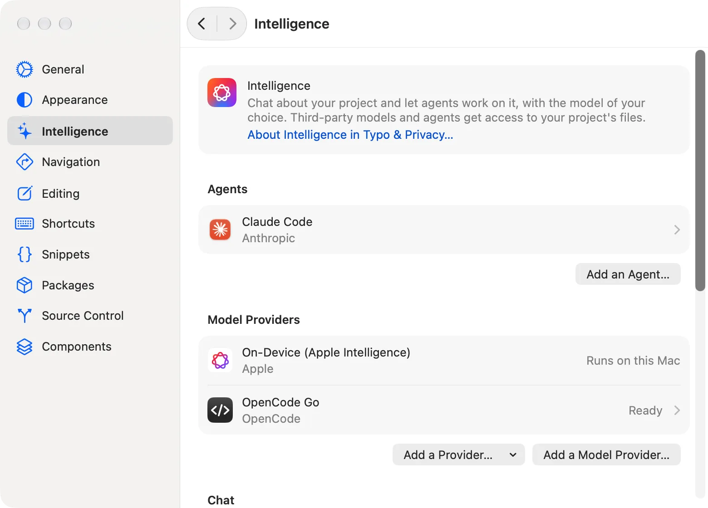
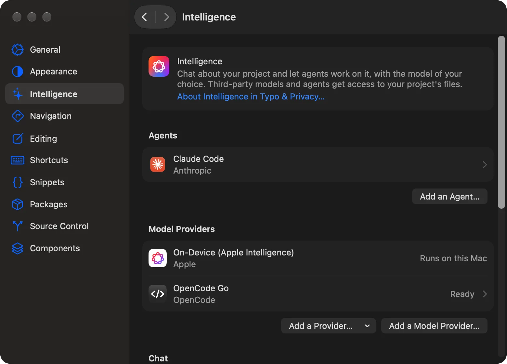
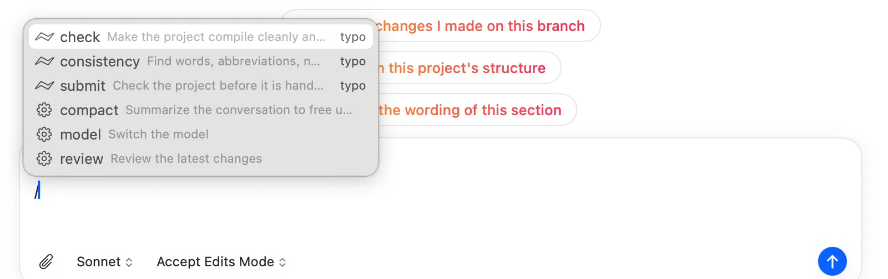
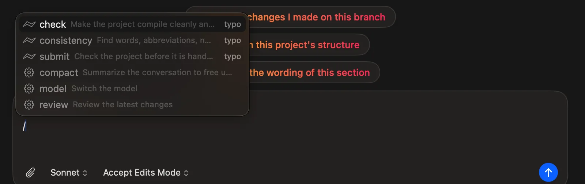
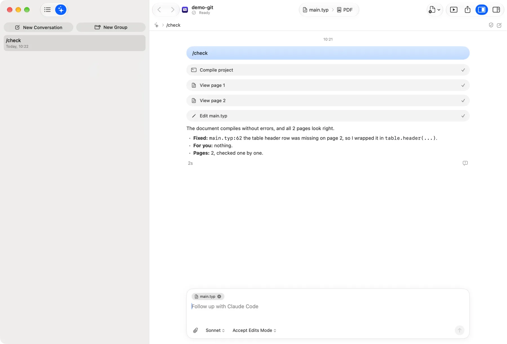
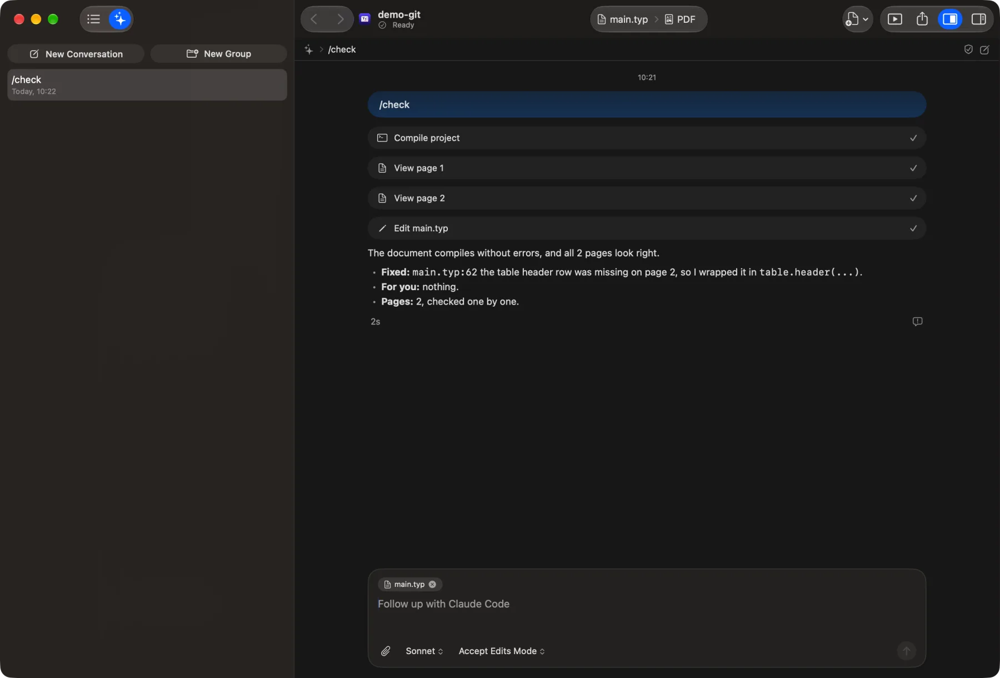

Assistant
The assistant is optional. This page explains how to set it up, what it may do, and how to extend it with workflows.
Model providers and agents
Open Settings › Intelligence. It has two kinds of entries.
- Model providers answer questions with a model. Typo supports on-device (Apple Intelligence), OpenRouter, OpenCode Zen, OpenCode Go and other OpenAI- or Anthropic-compatible providers. To add one, choose Add a Provider… and enter its API key and model.
- Agents are programs that run on your Mac in the project folder, such as Claude Code. Typo talks to them through the Agent Client Protocol. To add Claude, press Get next to Claude in the Agents section. You sign in with the agent’s own command line tool, and Typo never sees your login. Test Agent checks that it starts.
The Default provider setting chooses what new conversations use. Automatic picks the first ready provider, otherwise the on-device model.
To open the assistant, choose View › Show Assistant. View › New Conversation starts a new conversation.


Consent and privacy
- Typo sends nothing anywhere until you set up a model provider or an agent in Settings › Intelligence.
- On-device runs on your Mac, and nothing leaves it.
- A model provider receives your messages, the conversation, and the files you attach or let it read. API keys are stored only in your Keychain.
- An agent sends what it reads to its own provider, under that provider’s terms.
- Typo collects no analytics or usage data. Conversations are stored on your Mac and can be deleted.
The privacy sheet in Settings › Intelligence (About Intelligence in Typo & Privacy…) has the details.
Permissions
Settings › Intelligence › Permissions controls what the assistant and agents may do in your projects. For each action you choose Allow, Ask or Never (an action may offer fewer choices). The actions are: search the web, read the attached files, include compiler errors, change files, create new files, read project files, search the project and view the preview.
With Change files on Allow, changes are applied right away and can be reverted. With Ask, a card asks you to accept first. For one conversation, use the “This conversation may:” popover in the assistant sidebar. Its toggles override the defaults, and Reset restores them.
The same page has Control File & Folder Access, with lists of Allowed Folders and Allowed Commands, and a Web Access setting for agents. When access control is on, agents may work in the project folder, and Typo asks first for files elsewhere. Agents that use their own tools follow their own settings for what they do not ask about.
Changes made by the assistant show an inline diff, with a revert bar.
The “/” menu
Type / in a conversation to list the workflows. Pick one and add your text after it, for example /check chapter 2. Typo sends the workflow’s instructions to whichever model you use.




Built-in workflows
Typo ships three workflows. You can turn each on or off in Settings › Intelligence › Workflows, and press View to read its instructions.
/check- Makes the project compile cleanly and look right on every page. It compiles and fixes errors with the smallest edit, then looks at every page for layout problems such as overflowing text, a nearly empty page,
??in place of a reference, a missing image or a broken table. It does not change your wording or delete content. It ends with a short report. Optional argument: a file or page range to look at first. /submit- Checks the project before you hand it in, as a checklist: it builds, leftovers such as TODO and
??, references and citations, page count against a limit you name, document title, author and language, heading structure, alt text and table headers, fonts, accessibility if PDF/UA is wanted, and a look at the pages. It fixes mechanical problems, and asks you for content such as alt text. It does not export the PDF. You do that with File › Export. Optional argument: your requirements, for example the page limit or citation style. /consistency- Finds terms written in more than one way, such as spelling variants, abbreviations, units, numbers and heading capitalisation, and makes them consistent. It reports a table of what it kept and changed, and lists the cases it left for you to decide. Optional argument: terms to check, or a file.
Write your own workflows
- Open Settings › Intelligence › Workflows.
- Under My Workflows, press New Workflow. You can also duplicate a built-in one.
- Enter a name (lowercase letters, digits and single hyphens), a description and an argument hint, then write the instructions.
- Press Save.
In the instructions, write $ARGUMENTS where the text typed after the workflow name should go. If the instructions do not contain $ARGUMENTS, the text is added at the end. In the workflow list, Show in Finder reveals the file.
Make every table in the project match the template.
Focus on: $ARGUMENTSClaude’s skills and your Claude Code setup
These settings appear when Claude is set up as an agent (Settings › Intelligence › Claude).
- Claude › Skills lists the skills in
~/.claude/skills. Turn on the ones Claude should load in Typo. - Use my Claude Code setup loads your own
CLAUDE.md, skills, plug-ins, hooks, memory and settings from~/.claude, as in the terminal. With it off, Claude sees only the project’s setup and the skills you turned on. With it on, all skills load. It applies to new conversations.
The MCP server
Typo includes typo-mcp, a Model Context Protocol server that gives other AI agents Typo’s Typst tools: compile errors, page previews, Typst docs, packages and fonts. In Settings › Intelligence, the Model Context Protocol section has these buttons:
- Copy Command copies the path of
typo-mcp. - Add to Claude Code registers it for all your projects. This needs Claude Code to be installed.
- Add to Claude Desktop adds it to Claude Desktop’s configuration.